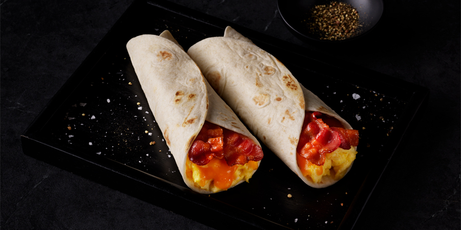

Bacon & Egg Wrapp

Making the Best Bacon and Egg Breakfast Wrap You’ve Ever Had!
These delicious breakfast wraps are perfect to take on-the-go or serve with other breakfast sides, and are easy to make too. If you are feeding a crowd, these can even be made in advanced and then reheated in the oven before serving.
INGREDIENTS
- 4 slices HORMEL® Microwave Ready Bacon
- 2 eggs
- 2 tablespoons milk
- Salt and pepper, to taste
- 1 teaspoon oil
- 2 (6-inch) tortillas
- 2 tablespoons shredded cheddar cheese
DIRECTIONS
- Cook bacon according to package directions.
- In bowl, beat eggs with fork. Add milk, salt and pepper. Beat until well blended.
- In small skillet over medium heat, heat oil. Add egg mixture. Cook and stir until soft scrambled.
- Place tortillas on microwave-safe plate. Microwave on HIGH (100%) 30 to 60 seconds or until heated.
- Spoon scrambled eggs down center of each tortilla. Top each with 1 tablespoon cheese. Place two slices bacon over eggs and cheese. Roll into wrap.